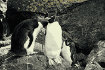
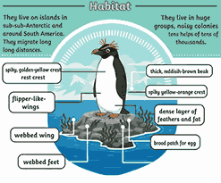
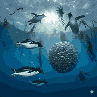

The Energetic Penguins That Hop Over Rocks

Southern Rockhopper penguins are known for their bright yellow crest feathers and red eyes. They get their name from their habit of hopping over rocks instead of sliding on their bellies like other penguins.

Southern Rockhopper penguins live on sub-Antarctic islands such as the Falkland Islands and parts of southern South America. They prefer rocky shores and cliffs for nesting.

They mainly feed on krill, squid, and small fish. Southern Rockhoppers are strong swimmers and skilled divers while searching for food in cold ocean waters.